Preview of some of my recent projects!
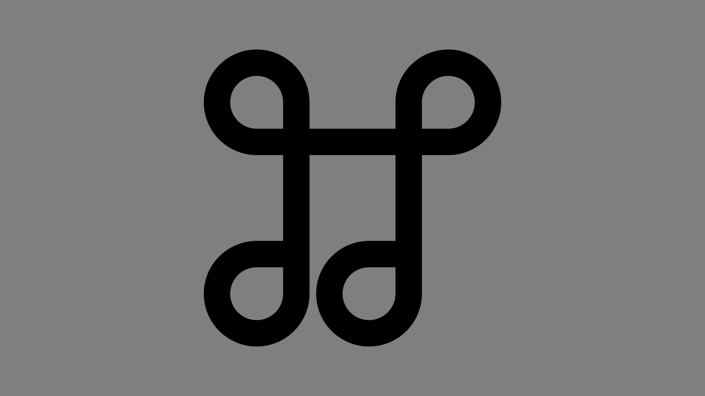
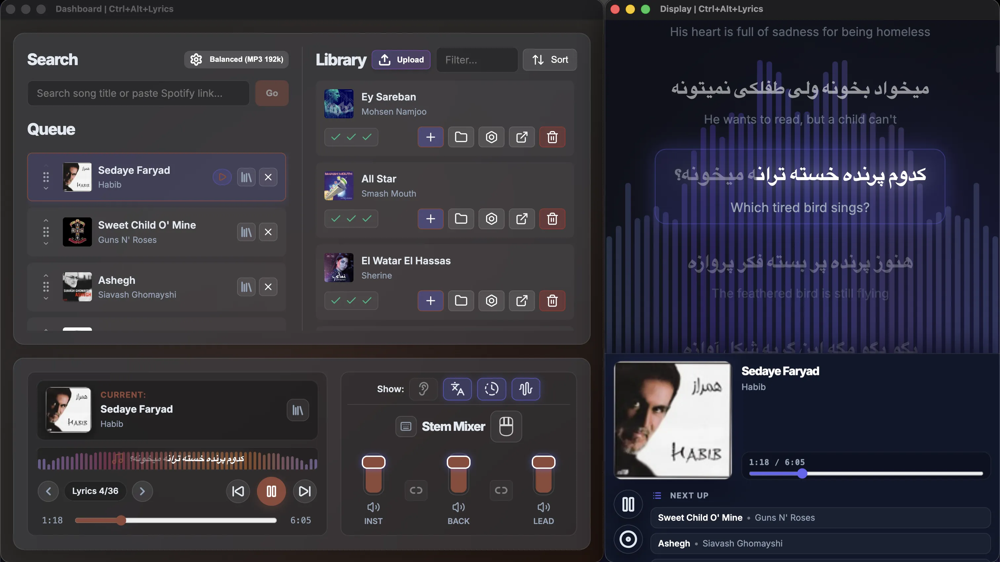
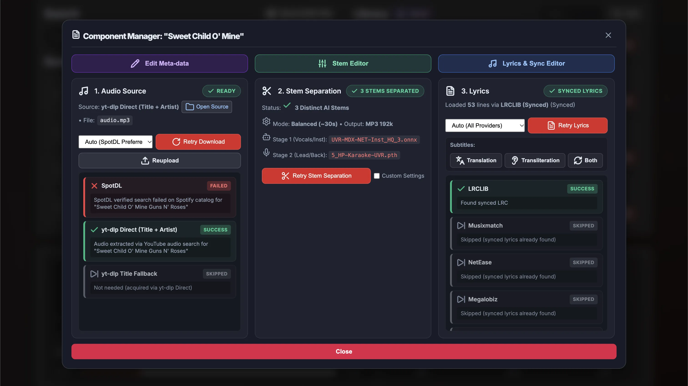
Ctrl+Alt+Lyrics
All-in-one full-stack karaoke player
- Made a local full-stack application with Node.js and Python that fetches and processes songs in the backend while providing display and music controls on the frontend.
- Applied maximum automation and integration, putting public scripts together for different stages from fetching song info, splitting audio stems, and fetching and syncing lyrics.
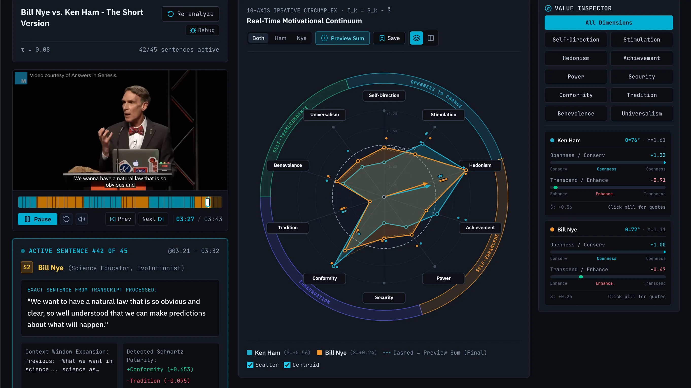
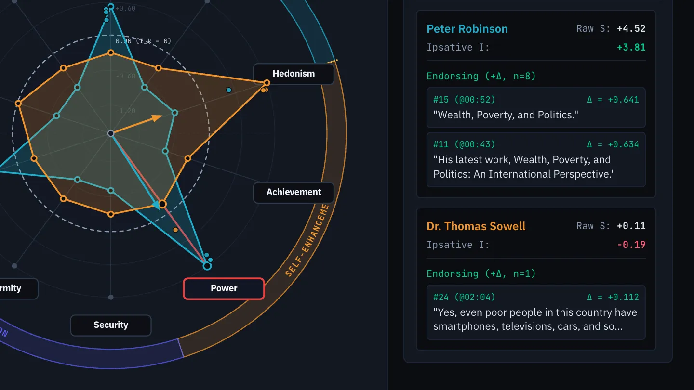
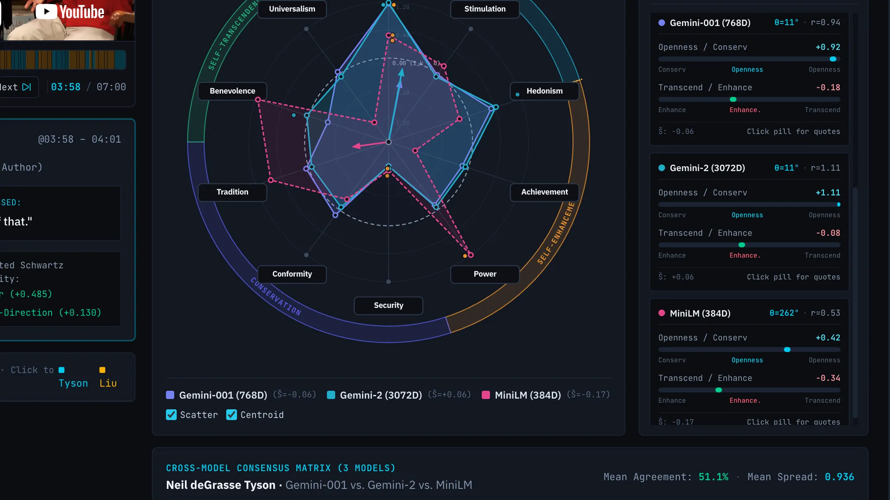
Valuelizer
NLP mapping of conversations to Schwartz's values model
- Visualizes evolving speaker value profiles across different dimentions of Schwartz's Theory of Basic Values.
- Provides interface to compare evaluations between speakers, LLM models, and conversations.
- Built with: Google AI Studio and Gemini Embedding Model API (+ other LLM APIs)
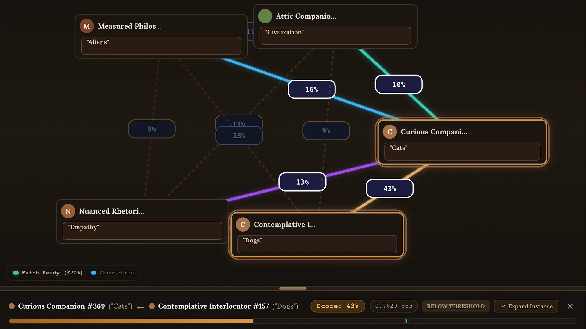
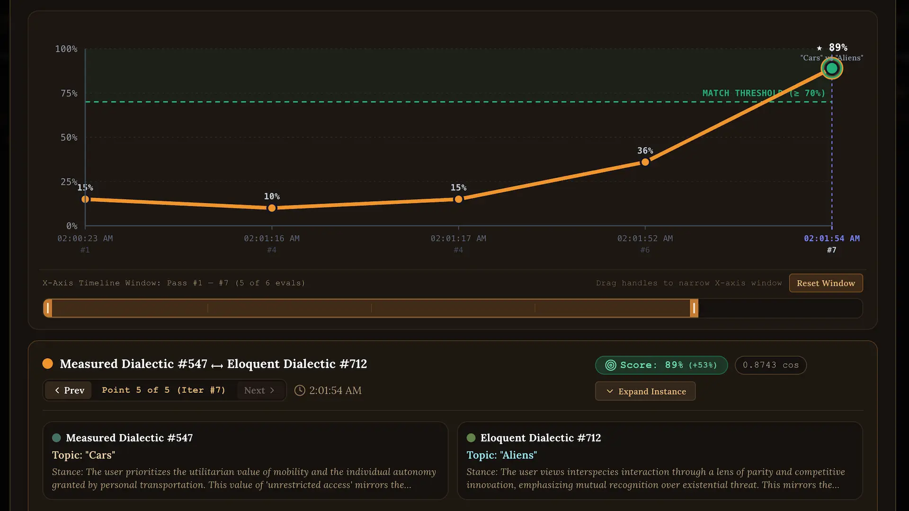
SocraticAI
NLP-based conversation match-maker
- A real-time, multi-user dialogue platform that pairs people across differing or converging perspectives using Socratic warmup.
- Each waiting participant's topic and unpacked diagnostic stance are embedded into high-dimensional vectors for semantic vector matchmaking.
- Built with: Google AI Studio and Gemini Embedding Model API
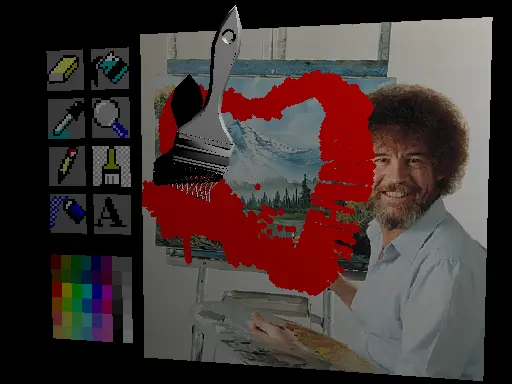
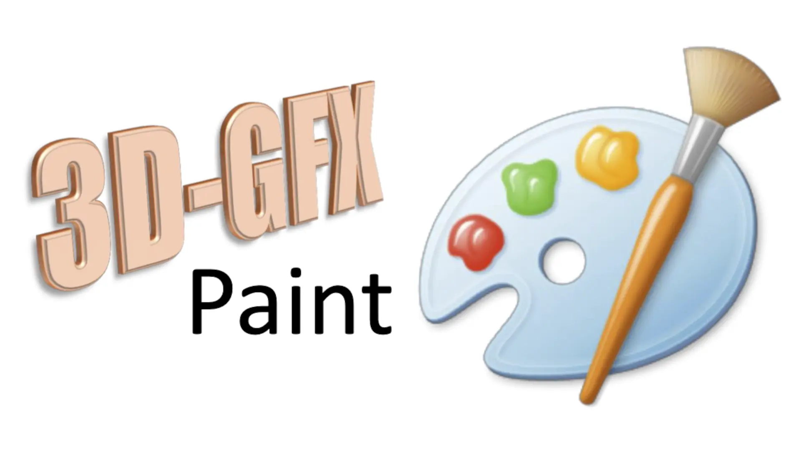
3D-GFX Paint
CS488 Computer Graphics Project
- A 3D graphical adaptation of classic MS Paint software, with twists to turn it into an interactive painting simulator environment.
- Implemented rigid and deformable body physics, collision detection between particles and surfaces, texture UV mapping and manipulation, Bounding Volume Hierarchy (BVH) optimization, and non-photorealistic rendering techniques.


FINE247 Portfolio
TouchDesigner Interactive Projects
- Programmed dynamic, interactive, and immersive artworks using TouchDesigner during the FINE247 studio course.
- Learned the fundamentals of digital manipulation and expanded media to design an installation for a cave automatic virtual environment (CAVE) exhibition.


CS/FINE383 Portfolio
p5.js Computational Art Projects
- Programmed generative, interactive, and computational artworks using p5.js JavaScript library during the CS/FINE383 studio course.
- Learned some techniques in computational digital art and interdisciplinary fields, including distributed systems and machine learning integration, to design an installation for a public pop-up exhibition.
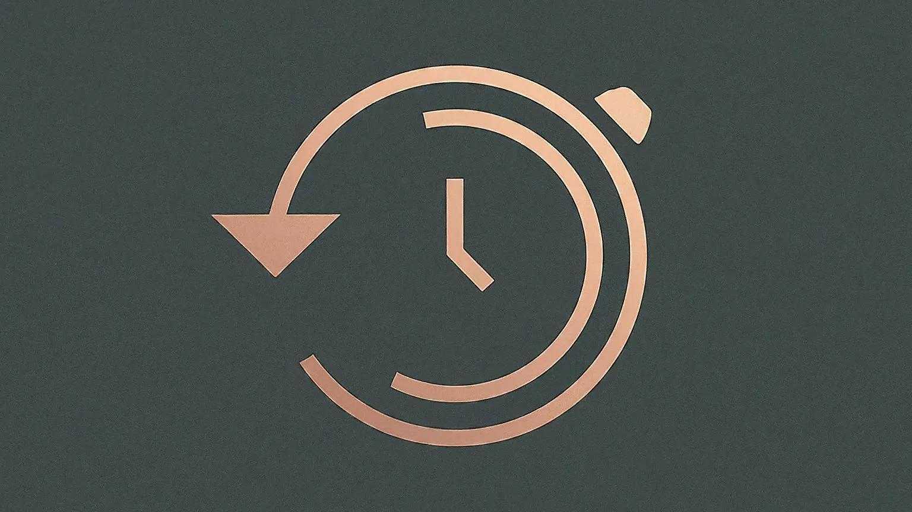
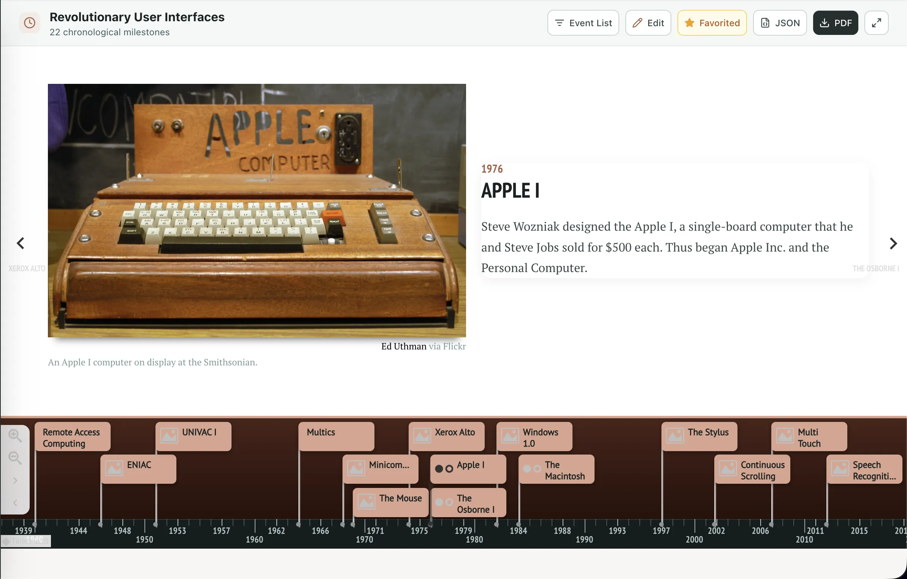
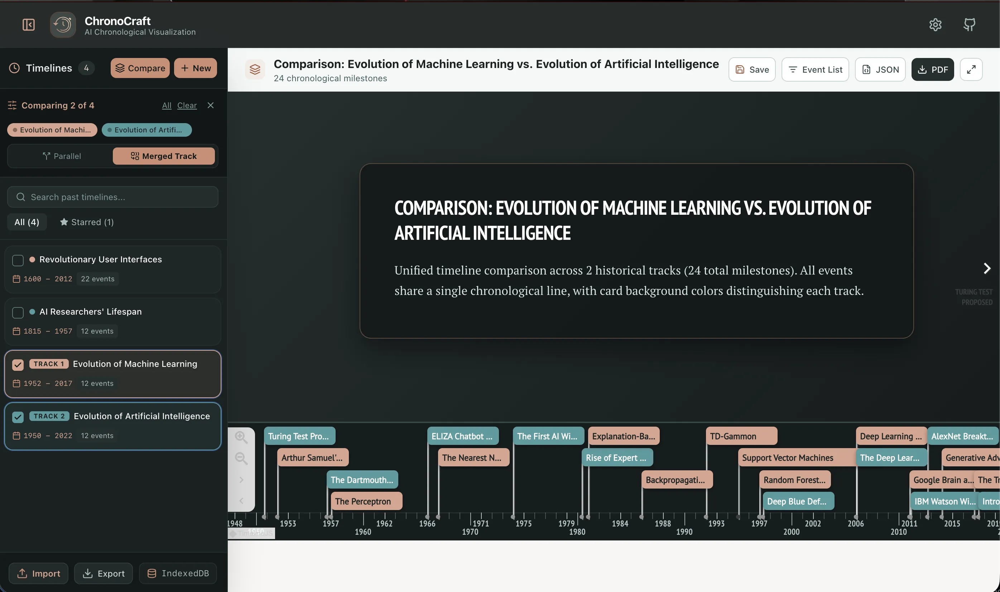
ChronoCraft
Timeline Research & Visualization Tool
- Chronological visualization platform to generate interactive, rich visual timelines out of historical data.
- Rendered with extending TimelineJS, and powered by AI search models like Google Gemini (or OpenAI API, if provided).
- Ability to fetch web content, modify meta-data, and compare previous queries stored locally.
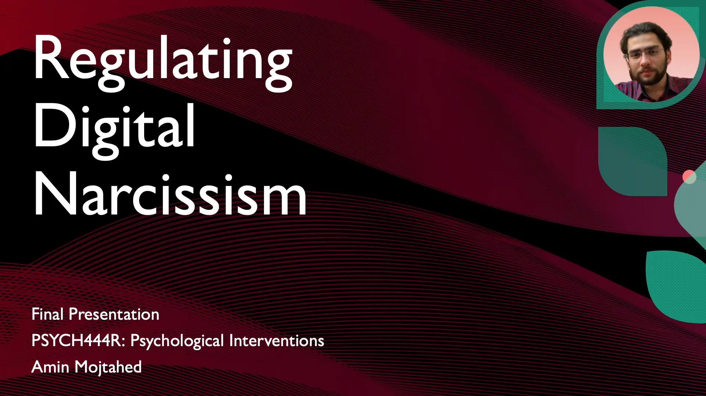
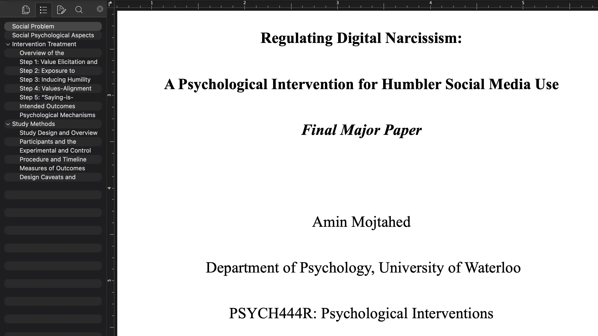
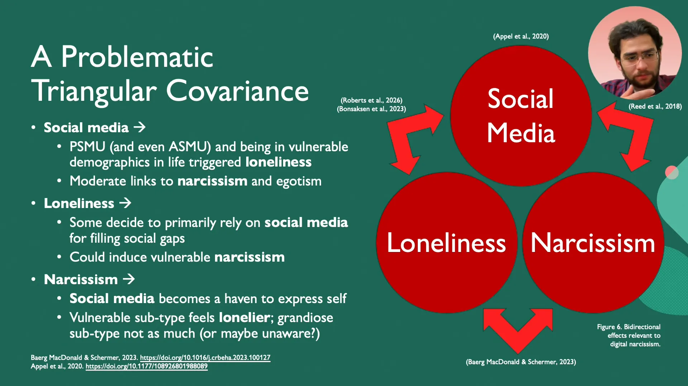
PSYCH444R Psychological Intervention Design
Regulating Digital Narcissism
- Practiced wise psychological intervention design through a final presentation and a major report to introduce a social problem, a strategy to address it, and its evaluation.
- Analyzed the "digital narcissism" effect at interplay of narcissism, loneliness, and social media to propose self-regulation solutions.


PSYCH357 Group Project
Analyzing Psychology of "Good"
- Identified the Human Library Organization as a non-profit institution with group psychological benefits, and researched its process and impact.
- During a poster session, presented principles behind the vision of the organization, and discussed the challenges and opportunities in implementing its mission.